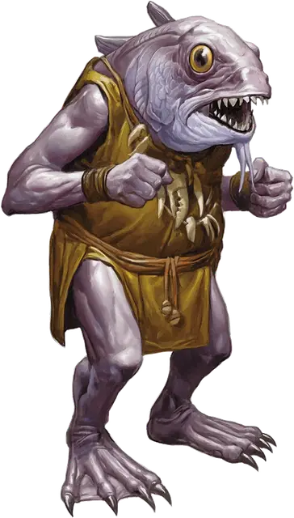

Куо-тоа
Kuo-toa
Средний Гуманоид (Куо-тоа), нейтрально-злой

Класс Доспеха 13 (природный доспех, щит)
Хиты 18 (4к8)
Скорость 30 футов, плавая 30 футов
| мод | спас | ||
|---|---|---|---|
| СИЛ | 13 | +1 | +1 |
| ЛОВ | 10 | +0 | +0 |
| ТЕЛ | 11 | +0 | +0 |
| мод | спас | ||
|---|---|---|---|
| ИНТ | 11 | +0 | +0 |
| МДР | 10 | +0 | +0 |
| ХАР | 8 | −1 | −1 |
Навыки Восприятие +4
Чувства тёмное зрение 120 футов, пассивное Восприятие 14
Языки Подземный
Опасность 1/4 (50 опыта)
Бонус мастерства +2
Среда обитания Подземье
Особенности
Амфибия. Куо-тоа может дышать и воздухом и под водой.
Сверхъестественное восприятие. Куо-тоа может чувствовать в пределах 30 футов присутствие невидимых существ и существ, находящихся на Эфирном Плане. Он может узнать точное местонахождение этих существ, если они будут перемещаться.
Скользкий. Куо-тоа совершает с преимуществом проверки характеристик и спасброски, совершенные чтобы высвободиться из захвата.
Чувствительность к солнечному свету. Находясь на солнечном свету, куо-тоа совершает с помехой броски атаки, а также проверки Мудрости (Восприятие), полагающиеся на зрение.
Действия
Укус. Рукопашная атака оружием: +3 к попаданию, досягаемость 5 футов, одна цель. Попадание: Колющий урон 3 (1к4 + 1).
Копье. Рукопашная или дальнобойная атака оружием: +3 к попаданию, досягаемость 5 футов или дистанция 20/60 футов, одна цель. Попадание: Колющий урон 4 (1к6 + 1), или колющий урон 5 (1к8 + 1), если используется двумя руками для совершения рукопашной атаки.
Сеть. Дальнобойная атака оружием: +3 к попаданию, дистанция 5/15 футов, одно существо с размером не больше Большого. Попадание: Цель становится опутанной. Цель может действием совершить проверку Силы Сл 10, чтобы освободиться самой или освободить из сети другое существо, оканчивая эффект при успехе. Причинение сети рубящего урон 5 (КД 10) освобождает цель, не причиняя ей урон, и уничтожает сеть.
Реакции
Липкий щит. Если существо промахивается по куо-тоа атакой рукопашным оружием, куо-тоа использует липкий щит, чтобы поймать оружие. Атакующий должен преуспеть в спасброске Силы Сл 11, иначе оружие приклеится к щиту куо-тоа. Если владелец оружия не хочет или не может отпустить оружие, он становится схваченным, пока не отклеит оружие. Приклеенное оружие нельзя использовать. Любое существо может оторвать оружие действием, если совершит проверку Силы Сл 11 и преуспеет.
Описание
См. дополнительно статью: "Бестиарий: Куо-Тоа"